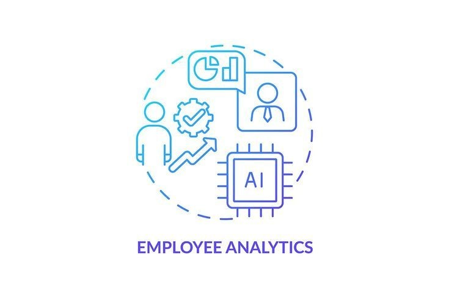
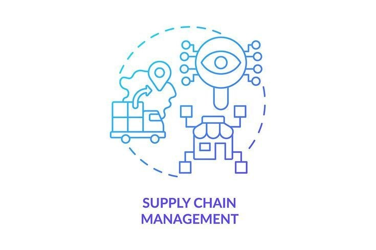
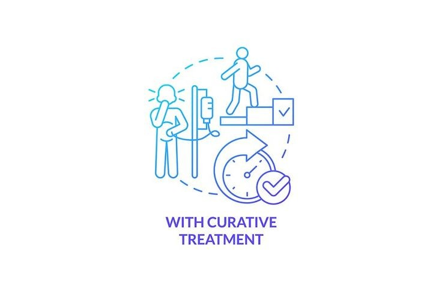
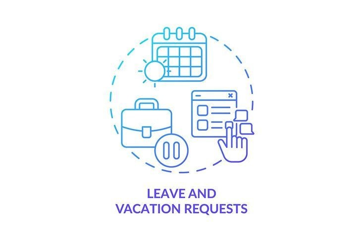
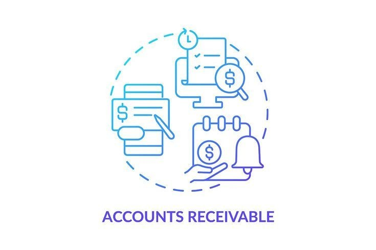
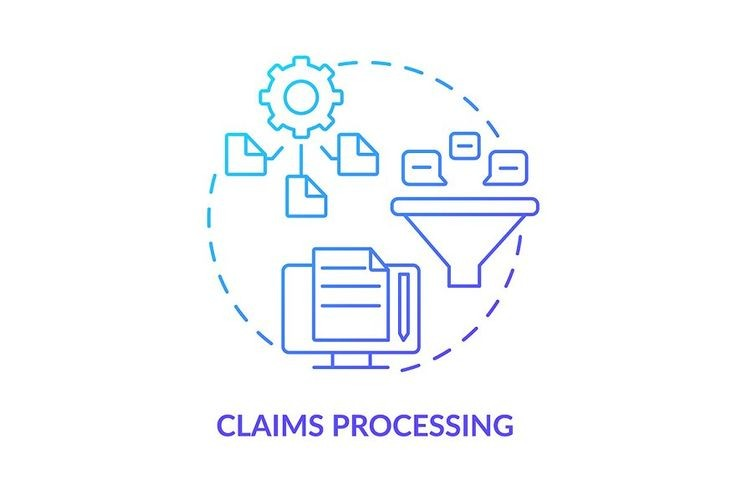

Sparkle
"Empowering Innovation and Transforming Possibilities: Your Trusted Partner in Crafting Excellence,
Driving Growth, and Envisioning a Limitless Future."
Welcome To My Company...
A pioneering leader in the realm of AI-driven solutions. With a relentless commitment to innovation, we bring cutting-edge artificial intelligence technologies to transform businesses across diverse industries. Our company stands at the forefront of revolutionizing how businesses operate, harnessing the power of AI to drive efficiency, enhance decision-making, and unlock unprecedented growth.
Our Services
We provide AI-powered solutions that help businesses automate their processes and make
data-driven decisions. Our services include natural language processing, computer vision, predictive analytics,
and more. We have a team of experts who can help you integrate our solutions into your business processes and
provide support throughout the process we work to create light for others, we naturally light our own way.
>

Employee analytics is the process of collecting and analyzing data related to employee performance,
engagement, and productivity to improve the overall employee experience.
It can include valuable workforce metrics, such as employee attrition, benefits, and engagement statistics.

Supply chain management (SCM) is the centralized management of the flow of goods and services and includes all
processes that transform raw materials into final products.
By managing the entire production flow of a good or service — starting from the raw components all the way to
delivering the final product to the consumer — companies can create a network of suppliers.

Curative care represents a proactive approach to medical treatment. This care aims to eliminate medical
issues, rather than simply minimizing their impact.
A patient that is receiving curative care will typically receive medication, have access to technology,
undergo surgery, and take any other measures that could be considered effective approaches to treat an
illness.

A vacation request email is your opportunity to ask your employer for specific dates off from work.
An effective request email informs your employer of your plans to ensure your work is completed or covered in
addition to when you’ll be absent from and returning to work.
It is important to write a vacation request email to get approval from your supervisor to take time off from
work.

Accounts receivable (AR) are the balance of money due to a firm for goods or services delivered or used but
not yet paid for by customers.
Accounts receivable are listed on the balance sheet as a current asset.
Any amount of money owed by customers for purchases made on credit is AR.

Claims processing involves the actions an insurer takes to respond to and process a claim it receives from an
insured party.
A claim is that payment an insurer makes to an insured party with respect to paid premiums.
Note that when processing a claim, the insurer undertakes several actions before reaching a conclusion.